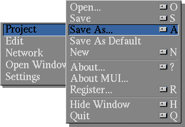
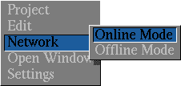

| Contents: | Main Toolbar | Loading/Saving Projects | On/Offline mode | Summary |
| Tutorial 1: Projects | ||||||
|---|---|---|---|---|---|---|
|
|
|
| Main Toolbar |
You can invoke NewsRog by clicking on its icon from the Workbench or
running it from a CLI. When it starts, you will see a window similar to
this one (the exact look will vary depending on your MUI preferences).
This toolbar is a launcher for various sub areas of NewsRog, such as the
newsgroup list editor, the news servers editor, and so on.
Most of the windows accessed from the main toolbar have an Open Window menu from which other windows can be opened directly. Pressing the right mouse button when a NewsRog window is active will display the menu for this window. Consult your Amiga documentation for more help on using menus. Clicking on the close gadget in the upper left corner of the main editor window will close NewsRog, and depending on your configuration settings, will save your project. Clicking on the close gadget other windows will close that window but leave NewsRog running. This toolbar may appear in monochrome if you running in a screen with a small number of colors. Screens with resolutions lower than 800x600 also use a smaller set of images. |
| Loading, Saving, and Using projects |

A project is a collection of data that defines the programs configuration.
Almost everything about the program's current state is saved with a
project. Although they can have any name, by default they are named
Project.Name, where Name is a name for the project that you
choose. The open/closed state of most of the main windows is saved with a
project. The position of the windows can be saved by using the MUI
Snapshot menu or gadget. in the upper right corner of the window. Projects define a collection of newsgroups, news servers, multimedia types, and other information. You can create as many or as few projects as you wish, but only one may be loaded at a time. When you start the program by clicking on the main NewsRog icon, a project called Project.Default is loaded from the Projects directory. You can also start the program by clicking on a project icon, which will load the project associated with that icon, or you may drop a project icon on the main toolbar to load that project. |
| Online and Offline Mode |
NewsRog can operate in two modes: Online and Offline. In
Online mode, the network is available and NewsRog can read headers,
articles, and other information from a news server over the net. In
Offline mode, the network is unavailable, and all operations must be
performed from local cache. Some features of the program are not
available in offline mode, but it is possibly to read a group fully in
offline mode as long as certain operations were done before hand in online
mode.  To move from one mode to another, you can use the the Online or Offline menu items, available in most of the windows directly accessable from the main toolbar. NewsRog will refuse to enter online mode if there is no networking stack present; i.e, if Miami or another TCP/IP stack is not running.
The group list window also displays the current on or offline mode. Some of the program's gadgets or menus become ghosted in offline mode; these are unavailable until you return to online mode. |
| Summary |
|